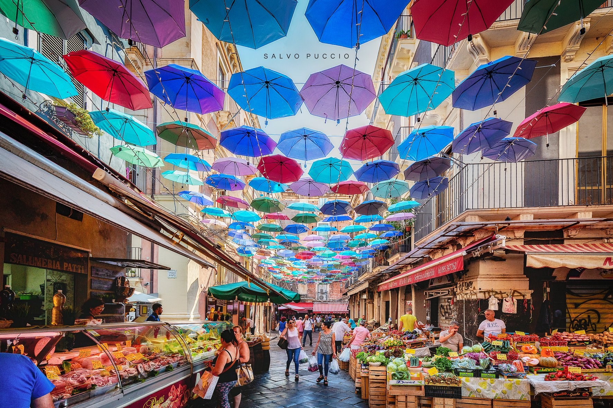

VISIT CATANIA
CENTRI STORICI
LUOGHI DI INTERESSE
MIGLIORI ALLOGGI
MIGLIORI RISTORANTI
CENTRI COMMERCIALI
PAESI LIMITROFI
INFO E CONTATTI
Previous
Next
Catania è una città d'arte favolosa, storicamente multiculturale ricca di ogni tipo di bene.
Guarda tutti i centri storici

Previous
Next
Catania è una città d'arte favolosa, storicamente multiculturale ricca di ogni tipo di bene.
Guarda tutti i centri storici